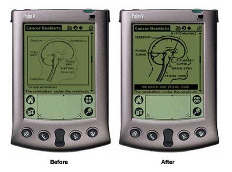
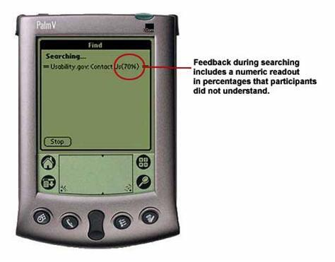
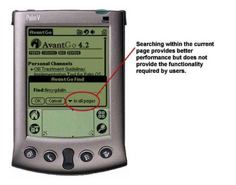
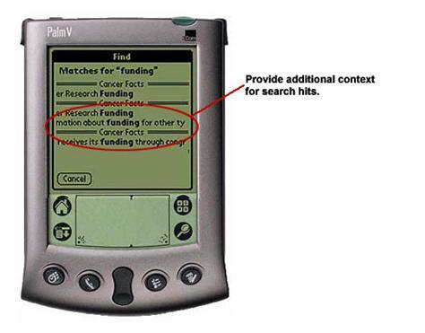
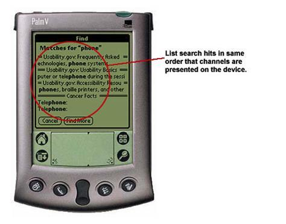
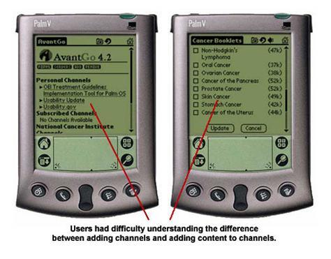

The AvantGo Enterprise 4.2 Solution provides a platform to deliver Internet content onto handhelds.
Providing cancer information on handheld wireless devices such as Palm and Pocket PCs presents new challenges to designers and usability professionals.
Format Guidelines
Manual formatting was required to adjust for the variable interaction of the AvantGo application browser and the handheld hardware.
In the development of the NCI content for display on a PDA, the need for several formatting-related improvements was identified. These improvements included the following:
- There were limitations in the ability to format text using standard display characteristics, such as underlining and italicizing, which are commonly available when designing on the Web.
- There is no vertical spacing when using a <P> tag in the WinCE browser. As a result, it was necessary to replace each <P> tags with <BR> tags to force the formatting to appear as desired.
- The end-of-line character sometimes wrapped onto a new line by itself, resulting in two blank lines being displayed instead of one. Manual adjustments were required to compensate for this "feature."
- Punctuation marks are treated as separate words within AvantGo and are often wrapped to a new line. Manual adjustments were required to compensate for this "feature."
- Italicizing and underlining text were not available on the Palm browser.
- Mismatched <table> tags resulted in the entire page not being displayed correctly.
- Lines that have multiple hyperlinks sometimes wrapped incorrectly in the WinCE browser.
CTB contacted AvantGo Inc. and shared the formatting findings. AvantGo responded with their comments below.
AvantGo Response
The following analysis is based on AvantGo M-Business Server version 4.2. In May 2002, AvantGo, Inc. released AvantGo M-Business Server version 5.0 Application Edition, which includes a complete rewrite of the AvantGo Client with greatly enhanced capabilities for developing robust mobile applications.
In AvantGo M-Business Server version 5.0, many of these small differences have been addressed. The reason for the differing behavior in version 4.2 is that AvantGo used AvantGo technology on Palm and a hybrid of AvantGo and Microsoft’s HTML control on Pocket PC devices. Now with version 5.0, AvantGo uses a unified codebase for Palm and Pocket PC, and many of these formatting differences have been eliminated.
A further explanation on the features and capabilities of AvantGo version 5.0 is available at the end of this document.
Scanning Images
The AvantGo application scales down images to fit onto the screen and needs some adjustments to improve image quality.
To provide the best display of images, three steps were needed:
- Darken and sharpen the image and lower its color depth to 16 colors
- Scale the image to a width of 150 pixels
- Manually retype each text label with a Web-friendly, pixel-based font
Through this process, the quality of the scanned image showed improvement.
Before/After Example:

CTB contacted AvantGo Inc. and shared the scanning findings. AvantGo Inc. responded with their comments below.
AvantGo Inc. Response
AvantGo Inc. improved this scanning feature in version 5.0. For images less than 16-bit, the AvantGo server goes to the native format, which is a .bmp file format on CE and the Palm native format. For images greater than 16-bit, AvantGo converts the format to a .jpg file formats, which look much better.
Searching
All PDAs do not have search engines.
The AvantGo software does not have its own search engine. Instead, it relies on the handheld operating system’s search engine. Blackberry’s users do not have the search tool, leaving browsing as the only option to navigate and resulting in variable results, including an inability to complete the testing scenario.
There are performance differences between handheld platforms when using the search.
Palm-Based Devices:
- Search tool performed much more slowly than Windows CE handhelds.
- Had slower performance, which prompted users to cancel "search."
- Needed to reset Palm when "cancel" button did not work.
Users responded by:
- Expecting immediate results.
- Becoming frustrated by varying length of search time.
There was a lack of effective feedback to the user regarding progression of the search.
Current feedback response model:
- A single value should display the total search progress through all of the AvantGo pages or for each AvantGo channel
- This data update rate provided accurate user feedback
Example:

There are insufficient options for searching using the AvantGo software.
There are two primary reasons to search on the PDA:
- To quickly locate an item on a lengthy page
- To locate an item that may be contained in one or more locations across pages
Users are presented with two AvantGo software "search" options:
- Search within page
- Search through all pages
Inefficient searches did not meet users’ expectations.
- Slower task time
- Multiple user actions to locate their item of interest
- Did not meet user’s expectations leading to frustration
Recommendation
- Searching within channel option may provide the solution to the usability problems.
Example:

The format of the search results confused users.
The search results page displayed a listing of word phrases for each search hit with the search term highlighted. However, the format of this display provided limited utility to the user for several reasons:
- The search hit listed the category in which the document was found but not the title of the document itself. This resulted in a display listing what appear to be multiple hits within the same document.
- Only about 35 characters are available per line for the phrase, and generally only one line is used per search hit. The result is a phrase that often did not provide sufficient context to tell the value of the search hit.
- Multiple lines appeared for a search hit, but users were unclear whether this actually represented two hits per document.
Example:

Presentation of search results was not organized intuitively.
The order of the search hits results did not correspond to the order of the channels on the AvantGo Server. This resulted in some confusion about the results and led some users to believe that there are no results matching their query.
Example:

Search results are not cached.
Based partially on the lack of sufficient feedback, but also as part of the nature of searching behaviors, participants indicated their:
- Need to evaluate the complete context of search hits
- Return to the search results page
Note: This behavior on PDA devices is consistent with search behaviors observed on Web sites.
Currently, the AvantGo software does not provide a means of returning to the search results without performing an entirely new search.
Recommendation:
- Maintain a search results page
- Provide a pathway to return to search results
CTB contacted AvantGo Inc. and shared the search tool findings. AvantGo Inc. responded with their comments below.
AvantGo Inc. Response
The AvantGo Client has built-in find capability on Palm and Pocket PC, which searches either within a page or all AvantGo pages stored on the device, but is not available on the Blackberry. However, search times are variable based on three factors:
- Content size
- Device processing power
- Screen size limitations
Due to these three factors, it may be difficult to navigate and interpret results. This is certainly something that AvantGo Inc. is investigating, but there are no plans to address this in its next release.
Channel Concept
The concept of channels is difficult to pick up.
The AvantGo software presents content in the form of channels. This presents the system designer with different opportunities:
- Allows the system designer to provide a logical separation of content
- Provides the means for the user to manage memory usage.
- For example, when large content areas are provided within a channel, usability testing dictates that this content must also be separated into manageable groups.
The user’s ability to develop a cognitive model on the content structure of the AvantGo channels is stymied by the unclear distinction of the AvantGo channels and the grouping of content.
Designer’s potential response:
- Provide all content as separate channels (resulting in an overly flat structure)
- Provide all content under a single channel (creating a non-functional layer in the application)
- Force the user to work with two concepts
Example:

Features and Capabilities of AvantGo M-Business Server 5.0
AvantGo M-Business Server 5.0 supports HTML 4.1, xHTML 1.0 and DOM level 1.0. Using Dynamic HTML, combined with JavaScript, developers can now create complex client-side logic and manipulate pages on the device for functionality such as sorting lists, building tables dynamically, populating controls and much more. Version 5.0 of AvantGo M-Business Server also includes new database functionality, allowing a developer to access XML data by doing a simple HTTP request, pulling back XML and the XSD and syncing the data into the native databases on Palm OS and Pocket PC-Powered devices. Once on the device, the data can easily be accessed using JavaScript to read/write and query from the native data stores. AvantGo M-Business Server 5.0 provides developers with a powerful infrastructure to develop and deploy robust mobile applications developed using web standard dynamic HTML, JavaScript and XML.